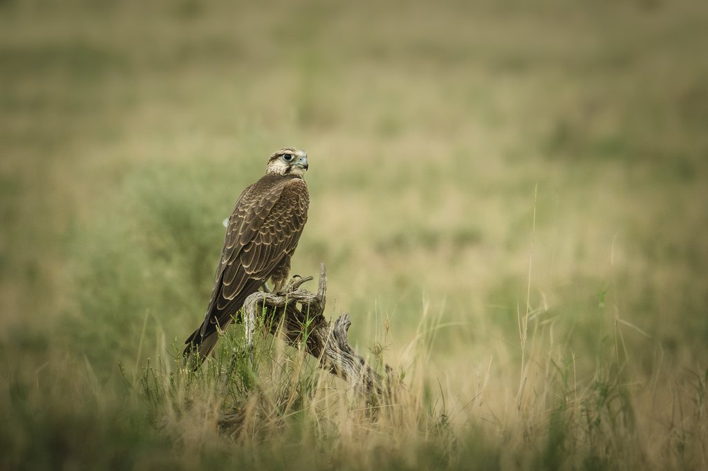
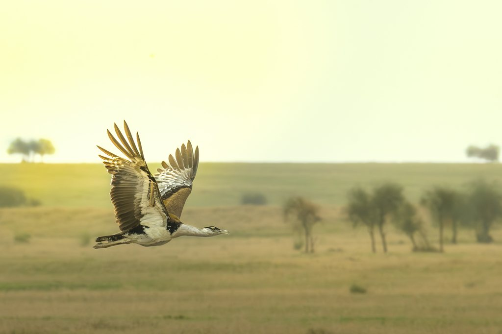
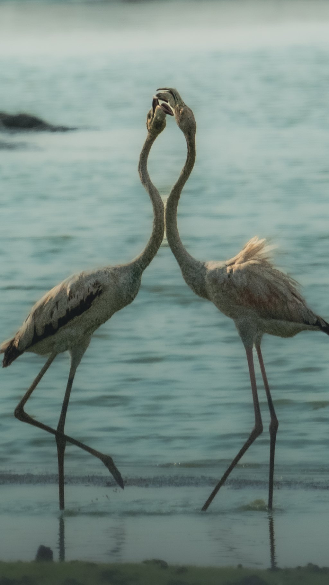
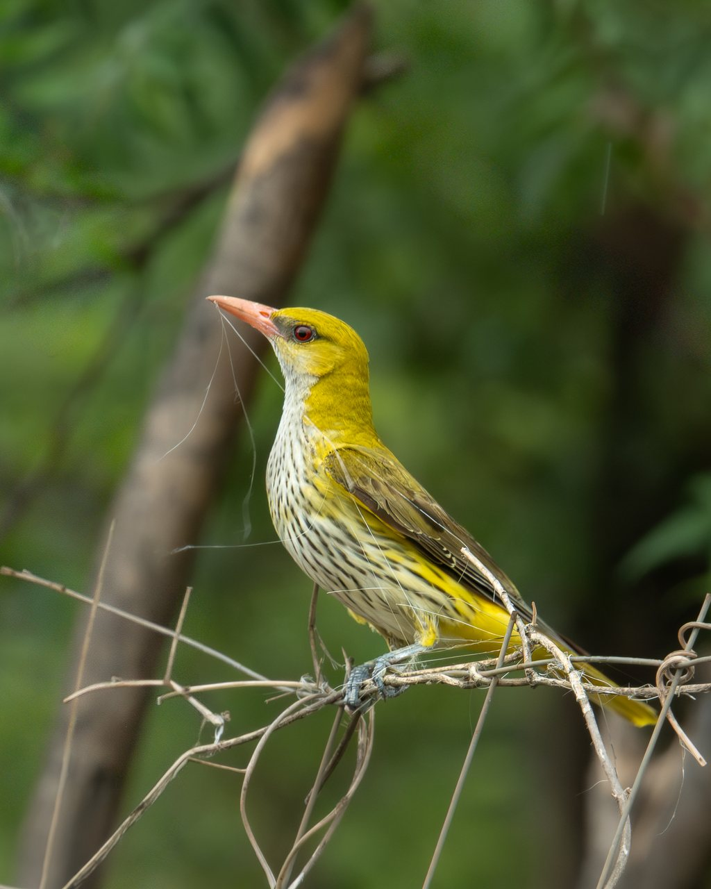
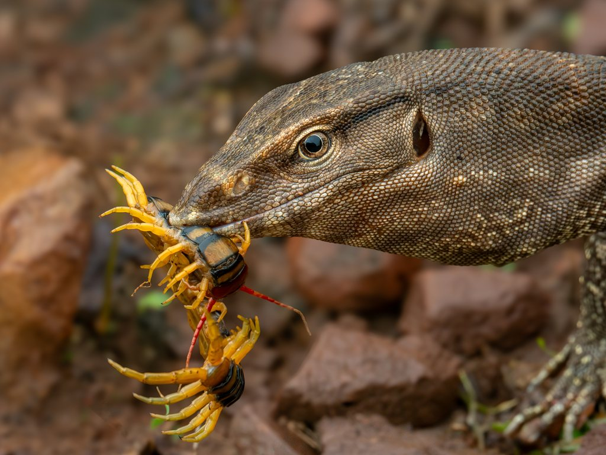
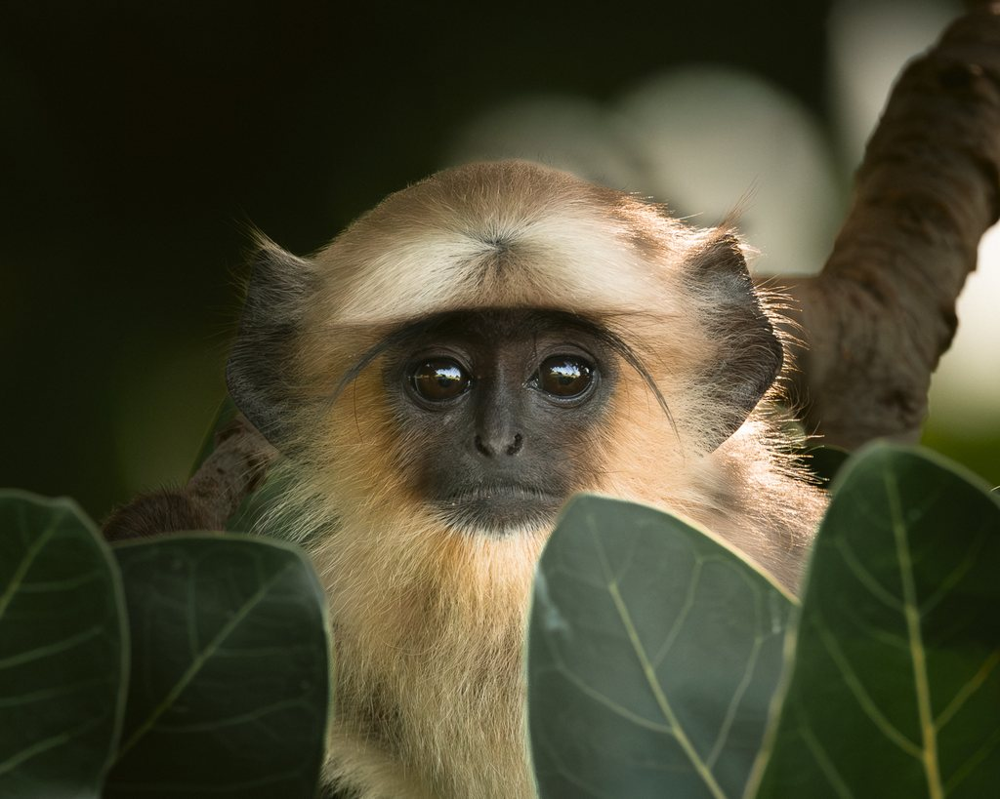
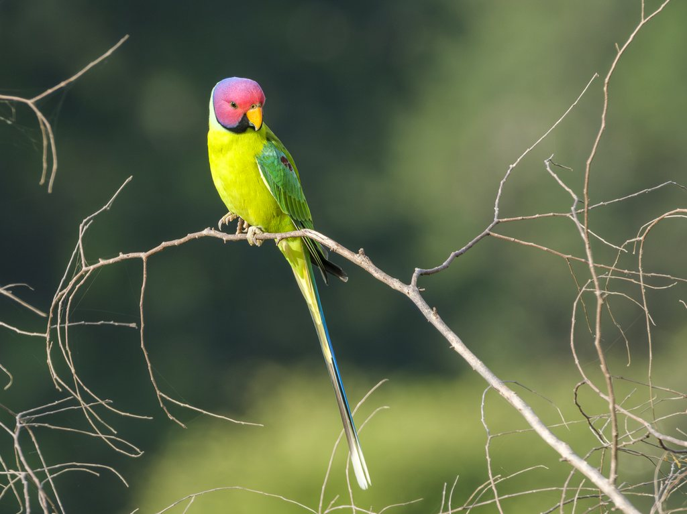

Raptors
Raptors Read the Wind
Falcons, buzzards and eagles as field indicators of prey, perches, season and open habitat health.

Vinay Chittora / Rajasthan field naturalist
A naturalist's portfolio of wildlife films, field notes, and biodiversity stories from Mukundara-linked landscapes, Thar grasslands, wetlands and forest edges.
What this is
Cane & Camera is built around patient natural history work: reading habitats, understanding behavior, and translating field encounters into photographs, films and conservation communication that still feel close to the ground.
Current field studies

Raptors
Falcons, buzzards and eagles as field indicators of prey, perches, season and open habitat health.

Grasslands
Bustards, coursers, larks, buntings and shrikes tell the story of Rajasthan's threatened grassland systems.

Wetlands
A patient look at tanks, reedbeds and shallows where waterbirds, nest builders and human pressure meet.

Forest Edge
The quieter side of the portfolio: groves, calls, insects and the shaded lives around Mukundara-linked edges.

Small Lives
Reptiles, small birds, insects and behavior-led moments that make biodiversity feel close and consequential.
Field method
Grass height, water level, fruiting trees, perches, tracks and calls decide the story before a subject appears.
No baiting, playback, handling or forced proximity. The image is never worth breaking the scene.
Flagship species matter, but so do shrubs, insects, reptiles, seed eaters, wetlands and the overlooked edges that keep systems alive.
Selected frames
Thar grassland
A rare flight across open country: the frame is about space, silence, and how much a grassland must still hold for this bird to survive.
Open scrub and grassland
A falcon on a low perch turns the grassland into a map of thermals, rodents, wind and waiting.
Leaf litter and rocky cover
The frame refuses the postcard version of wildlife. Scales, leaf litter, prey and hunger are the real field grammar.
Monsoon woodland
The monsoon has its own field marks, and this bird is one of the loudest.

Village grove and forest edge
A face from the shared edge of settlement and wild habitat.

Fruiting canopy
Color, fruit and motion: the forest edge as a feeding table.
Films

Film
A short documentary on life in the Sahyadris, following the atmosphere, species, and sacred ecology of the Western Ghats.

Film
A field film on the Great Indian Bustard's courtship display in Rajasthan, and the grassland stewardship needed for the species to survive.

Film
A Red-breasted Flycatcher links continents, winter refuge, Mukundara Hills and the Aravalli belt in one tiny migratory body.
Mukundara context
My field work around Mukundara Hills Tiger Reserve and Rajasthan's connected habitats looks at movement routes, wetland edges, grassland revival, native plants, reptiles, insects, birds and the daily negotiations between people and wild life.
Collaborations
If the project needs local ecological context, ethical field execution, or a naturalist's eye behind the camera, start with a short brief.